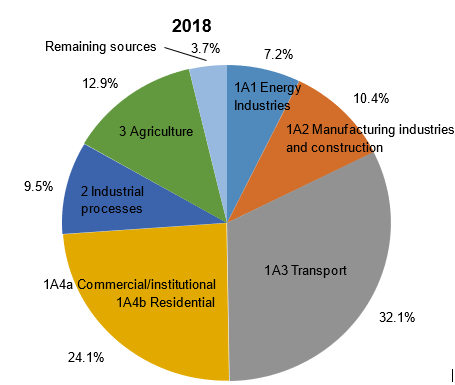
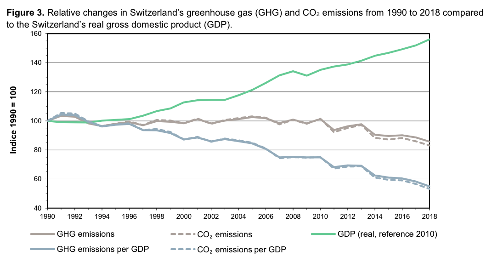

Switzerland is pleased to communicate its information necessary for clarity, transparency and understanding of its updated and enhanced nationally determined contribution (NDC) under the Paris Agreement covering the years 2021 to 2030, in accordance with Article 4 of the Paris Agreement and UNFCCC decisions 1/CP.21 and 4/CMA.1.
According to Decision 1/CP.21, paragraphs 24 and 25, Parties have the obligation to submit to the secretariat their nationally determined contributions at least 9 to 12 months in advance of the relevant session of the Conference of the Parties serving as the meeting of the Parties to the Paris Agreement with a view to facilitating the clarity, transparency and understanding of these contributions, and Parties whose intended nationally determined contribution contains a time frame up to 2030 are requested to communicate or update by 2020 these contributions and to do so every five years thereafter. Switzerland has accordingly communicated and updated its NDC on 19 February 2020 and announced that it will submit the information necessary for clarity, transparency and understanding once the deliberations on the revision of the third CO2 Act are concluded, following the guidance adopted at COP-24 in December 2018 in Katowice.
Switzerland’s updated and enhanced NDC is in line with latest findings by the IPCC1 to reduce global CO2 emissions by 40 – 50 percent compared with 2010 levels by 2030 and to achieve carbon neutrality by 2050 in order to limit warming to 1.5 degrees Celsius. For improved mutual understanding and comparability of the contribution, Switzerland hereby provides the information necessary for clarity, transparency and understanding of its NDC by voluntarily applying the guidance in relation to the mitigation section of 1/CP.21 adopted at COP-24 in Katowice earlier than required (4/CMA.1).
Switzerland’s updated and enhanced NDC and the information necessary for clarity, transparency and understanding are based on the third CO2 Act adopted by the Swiss Parliament in September 2020. The third CO2 Act is subject to a facultative referendum and, if the Act is definitively accepted, is intended to enter into force in 2022.
The updated and enhanced NDC represents a progression in several areas:
Finally, Switzerland applies the guidance adopted at COP-24 in Katowice.
Switzerland’s NDC comprises a mitigation target only. Comprehensive information on adaptation strategies, planning, measures and implementation are found in Switzerland’s first adaptation communication under the Paris Agreement (2020)2 and in Switzerland’s 7th National Communication (2018)3.
Switzerland’s NDC
Switzerland is committed to follow recommendations of science in order to limit warming to 1.5 degrees Celsius. In view of its climate neutrality target by 2050, Switzerland’s NDC is to reduce its greenhouse gas emissions by at least 50 percent by 2030 compared with 1990 levels, corresponding to an average reduction of greenhouse gas emissions by at least 35 percent over the period 2021–2030. By 2025, a reduction of greenhouse gases by at least 35 percent compared with 1990 levels is anticipated. Internationally transferred mitigation outcomes (ITMOs) from cooperation under Article 6 of the Paris Agreement will partly be used. The methodological approaches underlying the Swiss NDC are included in this communication.
Long-term: Switzerland aims to reduce its greenhouse gas emissions to net zero by 2050. This target lays the foundations for Switzerland’s 2050 climate strategy, which is to be transmitted to the UNFCCC Secretariat within a few weeks of this submission.
| 1. Quantifiable information on the reference point (including, as appropriate, a base year): | |
| a) Reference year(s), base year(s), reference period(s) or other starting point(s); | Base year: 1990 For forest land: reference level For non-forest land (cropland, grassland, wetlands, settlements, other land): reference period |
| b) Quantifiable information on the reference indicators, their values in the reference year(s), base year(s), reference period(s) or other starting point(s), and, as applicable, in the target year; | Emissions in base year (1990) comprise emissions from all sectors, except LULUCF. Indirect CO2 is also included. Provisional value for base year emissions, subject to change due to recalculations of the greenhouse gas inventory, is 54158.92 kt CO2eq. The value for the final accounting will be defined in the inventory submission covering data up to 2030. Emissions/removals from LULUCF will be reported and accounted for on a land-based approach. Forest land and non-forest land are not included in base year emissions, since only the net change in emissions compared with the reference level/period is accounted for in the land use sector (see 5f below). |
| c) For strategies, plans and actions referred to in article 4, paragraph 6, of the Paris Agreement, or polices and measures as components of nationally determined contributions where paragraph 1(b) above is not applicable, Parties to provide other relevant information; | Not applicable. |
| d) Target relative to the reference indicator, expressed numerically, for example in percentage or amount of reduction; | Emission reduction of at least minus 50 percent by 2030 compared with 1990 levels corresponding to an average reduction of greenhouse gas emissions of at least 35 percent over the period 2021–2030. |
| e) Information on sources of data used in quantifying the reference point(s); | Data source for the quantified information on the base year and reference period as well as for the construction of the reference level is the respective greenhouse gas inventory. |
| f) Information on the circumstances under which the Party may update the values of the reference indicators. |
Values of the reference indicators (base year, reference period, and reference level) are subject to recalculations and technical corrections, in accordance with UNFCCC decision 18/CMA.1. In addition, Switzerland’s National Inventory System Supervisory Board (NISSB) adopted principles for technical corrections of reference levels including that recalculations need to be based on sound scientific evidence, reflect the best available data and shall be transparently documented. Information on updates will be provided in the Biennial Transparency Reports. |
| 2.Time frames and/or periods for implementation: | |
| a) Time frame and/or period for implementation, including start and end date, consistent with any further relevant decision adopted by the Conference of the Parties serving as the meeting of the Parties to the Paris Agreement (CMA); |
1.1.2021 – 31.12.2030 This quantified commitment by 2030 is translated into an average commitment over the period from beginning 2021 to end 2030. Information on the anticipated level of emissions for 2025 is given for international comparability. |
| b) Whether it is a single-year or multi-year target, as applicable. |
Switzerland expresses its NDC both as single-year and multi-year target. The reduction target of at least minus 50 percent by 2030 compared with 1990 levels corresponds to an average reduction of at least minus 35 percent over the period 2021-2030. |
| 3. Scope and coverage: | |
| a) General description of the target; | Absolute economy-wide emission reduction target compared with a base year. |
| b) Sectors, gases, categories and pools covered by the nationally determined contribution, including, as applicable, consistent with Intergovernmental Panel on Climate Change (IPCC) guidelines; |
Gases covered: CO2 (including indirect CO2), CH4, N2O, HFCs, PFCs, SF6, NF3 Base year for gases covered: all 1990 (not relevant where a reference level/period approach is applied) Sectors covered: energy; industrial processes and product use; agriculture; land-use, land-use change and forestry; waste and other4 (consistent with 2006 IPCC guidelines). All categories and pools in Switzerland’s inventory are covered. While Switzerland supports the inclusion of international aviation and navigation on the basis of existing and future internationally agreed rules applicable to all Parties, Switzerland’s NDC currently does not include emissions from international aviation and navigation. In particular, Switzerland’s domestic emission reduction targets mentioned in the third CO2 Act do not include emissions from international aviation, a part of which are already covered by the Swiss emission trading scheme (ETS) as well as by the Carbon Offsetting and Reduction Scheme CORSIA of the International Civil Aviation Organisation ICAO. However, Switzerland’s domestic emissions reduction targets do include emissions from national aviation and navigation. |
|
c) How the Party has taken into consideration paragraph 31(c) and (d) of decision 1/CP.21; |
Switzerland has included all categories of anthropogenic emissions or removals in its NDC. |
| d) Mitigation co-benefits resulting from Parties’ adaptation actions and/or economic diversification plans, including description of specific projects, measures and initiatives of Parties’ adaptation actions and/or economic diversification plans. | Not applicable. |
| 4.Planning processes: | |
|
a) Information on the planning processes that the Party undertook to prepare its nationally determined contribution and, if available, on the Party’s implementation plans, including, as appropriate:
(i) Domestic institutional arrangements, public participation and engagement with local communities and indigenous peoples, in a gender-responsive manner; |
The emission reduction target of at least minus 50 percent by 2030 has been approved by the Swiss Parliament in 2016. Comprehensive consultation proceedings for both the second CO2 Act and the ratification of the Paris Agreement including the 2030 target had preceded the parliamentary debate, allowing stakeholders in Switzerland to comment on the target and the implementation plan. The ratification of the Paris Agreement passed the parliamentary process in 2017, after the deadline for a facultative referendum expired. The second CO2 Act underwent revision and parliamentary debate and the third CO2 Act was adopted by both chambers on 25 September 2020. The third CO2 Act is subject to a facultative referendum and, if the Act is definitely accepted, is intended to enter into force in 2022. Following the Fukushima nuclear accident in 2011, the Swiss Government and Parliament decided to gradually phase out nuclear energy, i.e. new plants were banned while existing plants were allowed to continue operating as long as deemed safe. To replace the share of nuclear energy, the Energy Strategy 2050, along with implementing legislation, was adopted and eventually endorsed by a majority of Swiss voters in 2017. The Strategy foresees to increase annual generation from new renewable sources other than hydropower to 11,400 GWh (from 4,186 GWh in 2019) and average hydropower production to 37,400 GWh by 2035 (from 36,137 GWh in 2019). Efficiency policies aim at stabilizing electricity demand. Long term: Switzerland plans its climate policy in 10-year-steps, continuously strengthening its reduction targets. In August 2019, and in response to the findings of the IPCC special report on 1.5 degrees Celsius, the Swiss Government communicated that Switzerland aims to reduce its greenhouse gas emissions to net zero by 2050. In doing so, Switzerland contributes to the internationally agreed target of limiting global warming to a maximum of 1.5 degrees Celsius when compared with the pre-industrial era. In November 2019, a popular initiative was submitted calling for a constitutional article to stipulate the net zero target and a ban of fossil fuels as of 2050. For further information on domestic institutional arrangements, see Switzerland’s 7th National Communication (NC) 5. |
|
(ii) Contextual matters, including, inter alia, as appropriate: (a) National circumstances, such as geography, climate, economy, sustainable development and poverty eradication; |
Information on national circumstances can be found in Switzerland’s 7th National Communication (NC) and in the annex of this communication. |
| (b) Best practices and experience related to the preparation of the nationally determined contribution; | See 4a) |
| (c) Other contextual aspirations and priorities acknowledged when joining the Paris Agreement; | Switzerland recognizes the need for an effective and progressive response to the urgent threat of climate change, in line with the best available scientific knowledge. Switzerland fully subscribes to the view that Parties should, when taking action to address climate change, respect, promote, and consider their respective human rights obligations, including due consideration for gender equality and gender sensitive policies, intergenerational equity, and the needs of particularly vulnerable groups. Switzerland is further committed to upholding environmental integrity, including the integrity of ecosystems and the protection of biodiversity. In addition, Switzerland is aware of the importance of the removal of fossil fuel subsidies, due to their major impact on greenhouse gas emissions. At the national level, Switzerland is actively reviewing its remaining fossil fuel subsidies. At the international level, Switzerland, together with Costa Rica, Denmark, Ethiopia, Finland, New Zealand, Norway, Sweden and Uruguay, is engaged in the Friends of Fossil Fuel Subsidies Reform who promote the removal of fossil fuel subsidies, in particular in G20-countries. |
| b) Specific information applicable to Parties, including regional economic integration organizations and their member States, that have reached an agreement to act jointly under Article 4, paragraph 2, of the Paris Agreement, including the Parties that agreed to act jointly and the terms of the agreement, in accordance with Article 4, paragraphs 16–18, of the Paris Agreement; | Not applicable. |
| c) How the Party’s preparation of its nationally determined contribution has been informed by the outcomes of the global stocktake, in accordance with Article 4, paragraph 9, of the Paris Agreement; | The first global stocktake takes place in 2023. As per UNFCCC decision 1/CP.24, paragraph 37, Switzerland considered the outcome of the 2018 Talanoa Dialogue, including the IPCC report on 1.5 degrees Celsius that was commissioned in this regard. In this context, Switzerland came to the conclusion that its NDC by 2030 is in line with recommendations of the IPCC to reduce emissions 40 – 50 percent compared with 2010 levels by 2030, given Switzerland’s per capita emissions are below global average. On the other hand and in line with the IPCC report on 1.5 degrees Celsius, the indicative target for 2050 communicated in 2015 has been revised and raised to net zero greenhouse gas emissions. |
|
d) Each Party with a nationally determined contribution under Article 4 of the Paris Agreement that consists of adaptation action and/or economic diversification plans resulting in mitigation co-benefits consistent with Article 4, paragraph 7, of the Paris Agreement to submit information on: (iii) How the economic and social consequences of response measures have been considered in developing the nationally determined contribution; (iv) Specific projects, measures and activities to be implemented to contribute to mitigation co-benefits, including information on adaptation plans that also yield mitigation co-benefits, which may cover, but are not limited to, key sectors, such as energy, resources, water resources, coastal resources, human settlements and urban planning, agriculture and forestry; and economic diversification actions, which may cover, but are not limited to, sectors such as manufacturing and industry, energy and mining, transport and communication, construction, tourism, real estate, agriculture and fisheries. |
Not applicable. |
| 5.Assumptions and methodological approaches, including those for estimating and accounting for anthropogenic greenhouse gas emissions and, as appropriate, removals: | |
| a) Assumptions and methodological approaches used for accounting for anthropogenic greenhouse gas emissions and removals corresponding to the Party’s nationally determined contribution, consistent with decision 1/CP.21, paragraph 31, and accounting guidance adopted by the CMA; | Switzerland’s greenhouse gas inventories form the basis for the accounting. Accounting approaches underlying Switzerland’s NDC and methodologies used are outlined below and are consistent with UNFCCC decision 1/CP.21, paragraph 31, and UNFCCC decision 4/CMA.1. The respective reporting is contained in this communication as well as in future Biennial Transparency Reports (BTRs) under the Paris Agreement, consistent with UNFCCC decisions 4/CMA.1 and 18/CMA.1 |
| b) Assumptions and methodological approaches used for accounting for the implementation of policies and measures or strategies in the nationally determined contribution; | Not applicable. |
| c) If applicable, information on how the Party will take into account existing methods and guidance under the Convention to account for anthropogenic emissions and removals, in accordance with Article 4, paragraph 14, of the Paris Agreement, as appropriate; | Switzerland will develop a forest reference level (FRL) for managed forest lands. This reference level will draw on Kyoto Protocol methodologies for developing what the Kyoto Protocol referred to as a forest management reference level (FMRL) (see UNFCCC decision 2/CMP.6). For forest land, elements like the calculation method of harvested wood products (HWP), the calculation of the background level and margin for the exclusion of natural disturbances and the basic principles of the FMRL are used from the 2013 Revised Supplementary Methods and Good Practice Guidance Arising from the Kyoto Protocol (2013 KP Supplement) by the IPCC. |
| d) IPCC methodologies and metrics used for estimating anthropogenic greenhouse gas emissions and removals; |
Inventory methodology used: IPCC 2006 guidelines, 2019 Refinement to the 2006 IPCC guidelines, or any subsequent version or refinement of the IPCC guidelines agreed upon by the CMA, as per UNFCCC decisions 4/CMA.1, paragraph 1a and 18/CMA.1, paragraph 20. 2013 Revised Supplementary Methods and Good Practice Guidance Arising from the Kyoto Protocol (2013 KP Supplement) by the IPCC, as per UNFCCC decisions 2/CMP.6 and 2/CMP.7. Global Warming Potential Values used: 100-yr GWP values from 5th IPCC assessment report, or from a subsequent IPCC assessment report as agreed upon by the CMA, as per UNFCCC decision 18/CMA.1 paragraph 37. |
| e) Sector-, category- or activity-specific assumptions, methodologies and approaches consistent with IPCC guidance, as appropriate, including, as applicable: | |
| (i) Approach to addressing emissions and subsequent removals from natural disturbances on managed lands; |
For forest land, the provision of natural disturbances will be applied. In cases or events in which emissions of natural disturbances are higher than the nationally established threshold value, it will be possible to exclude these emissions. This threshold value is based on the background level and the margin and will be calculated consistent with the 2013 KP Supplement using the same data set as used for the development of the scenario (current management practices) on which the forest reference level is based on. For non-forest land, no provisions for natural disturbances will be applied. |
| (ii) Approach used to account for emissions and removals from harvested wood products; | Harvested wood products are accounted for using a production approach (only wood from domestic harvest), consistent with the 2013 KP Supplement. |
| (iii) Approach used to address the effects of age-class structure in forests; | The effects of the age-class structure in forests are addressed through the forest reference level, which is calculated following the principles of the 2013 KP Supplement. |
| f) Other assumptions and methodological approaches used for understanding the nationally determined contribution and, if applicable, estimating corresponding emissions and removals, including: | |
| (i) How the reference indicators, baseline(s) and/or reference level(s), including, where applicable, sector-, category- or activity-specific reference levels, are constructed, including, for example, key parameters, assumptions, definitions, methodologies, data sources and models used; | The LULUCF sector will be accounted for based on a land-based approach. Forest land Definitions: Forest land encompasses all forest land remaining in this category (managed forest land) and all conversions from (deforested land) and to (afforested land) this category. For forest land, the same definition and parameters that Switzerland used under the Kyoto Protocol are applied. Managed forest land will be accounted for by comparing emissions/removals to a forest reference level (FRL). Emissions and removals resulting from afforested and deforested land will be accounted for as being the total emissions and total removals for each of the years (grossnet). The FRL will include living and dead biomass and harvested wood products (HWP). To calculate the FRL, the following models or methods are used
For a detailed description of the application, validation and verification of Massimo and Yasso07 and of the methodology used for HWP see Switzerland’s NIR 20206 and the references within. The underlying scenario to calculate the FRL is based on the “extrapolation of forest management practices”, also called “current management practices”. This scenario is statistically derived from data from the national forest inventory covering 1985-2006 (NFI1, NFI2, NFI3). By using these historical NFI-data, age class structure and other typical Swiss forest characteristics (growth conditions, mortality, harvesting practices, etc.) are reflected in the scenario. Other data sources used to establish the FRL are the same as used for the Swiss greenhouse gas inventory. Net accountable emissions/removals from managed forests lands are anticipated to be around zero if there are no distinct changes in forest management practices, assuming there are no clearly distinguishable changes within the NDC period arising from climate change and using the application of natural disturbance provisions where they arise. Non-forest land (cropland, grassland, wetland, settlements, other land) Non-forest lands will be accounted for by comparing emissions/removals to a reference period that presents a long-term historic average preceding 2020 (preferably 1990-2020). In its 2019 inventory submission, Switzerland provided modelling for soil carbon for the first time. The model is under constant improvement, and numbers will most certainly change over time. Annual variability in the model is large and trends are not yet fully understood. A single year reference is not considered representative. Consequently, Switzerland chooses a long reference period to increase robustness of the reference value. Methodologies to estimate greenhouse gas fluxes for different land uses and land-use changes are currently subject to major developments. The final decision regarding the length of the reference period will depend on the availability of sufficient and reliable data sets required for the methodologies currently under development. Switzerland welcomes a specific technical assessment of reference levels, when based on a projection, in the context of the technical expert review process under the Paris Agreement (Transparency Framework). Additional technical details on the forest reference level for managed forest and the reference period of non-forest land including quantified information will be provided at a later stage, at the latest in the first Biennial Transparency Report (BTR) under the Paris Agreement due in 2024. |
| (ii) For Parties with nationally determined contributions that contain non-greenhouse-gas components, information on assumptions and methodological approaches used in relation to those components, as applicable; | Not applicable. |
| (iii) For climate forcers included in nationally determined contributions not covered by IPCC guidelines, information on how the climate forcers are estimated; | Not applicable. |
| (iv) Further technical information, as necessary; | Not applicable. |
| g) The intention to use voluntary cooperation under Article 6 of the Paris Agreement, if applicable. | Switzerland will realize its NDC mainly domestically and will partly use internationally transferred mitigation outcomes (ITMOs) from cooperation under Article 6. The third CO2 Act foresees that at least three-quarters (75 percent) of the reduction in greenhouse gas emissions must be achieved through measures implemented in Switzerland, up from a previous 60 percent objective. This represents a 25 percent increase of the domestic share of emission reductions. Until further international guidance is adopted under the UNFCCC, Switzerland commits, in line with the San José principles for high ambition and integrity in international carbon markets7, to apply robust rules that avoid any form of double counting, ensure environmental integrity and promote sustainable development, including the protection of human rights, and not to use pre-2020 units towards the achievement of its NDC. Therefore, Switzerland will apply the guidance on cooperative approaches referred to in Article 6, paragraph 2, of the Paris Agreement as presented by the CMA-2 presidency on 15 December 2019 at 00:508, until multilateral rules are agreed. Thereby, Switzerland will apply corresponding adjustment of the emission level covered by the NDC as reported in the inventory applying accounting by addition/subtraction of ITMOs first transferred and used towards the NDC. Corresponding adjustment will be made on all transfers over the NDC period. As of the date of submission, Switzerland signed in October 2020 an agreement with Peru, followed by an agreement in November 2020 with Ghana, that create the necessary frameworks for cooperative approaches under Article 6.2 of the Paris Agreement. The agreements govern the transfers of mitigation outcomes and their use and define the method for corresponding adjustment. Towards a multi-year target (2021-2030), the total sum of the mitigation outcomes first-transferred or used towards NDC achievement over that period will be reflected; towards a single year target (2030) the average thereof. The ITMOs may be used for other mitigation purposes, such as e.g. voluntary climate neutrality targets by private or sub-state actors, which would not be counted towards Switzerland’s emissions reductions objectives. Furthermore, the agreements ensure environmental integrity, prevents double counting, and foresees concrete requirements regarding the promotion of sustainable development, including the protection of human rights. |
| 6. How the Party considers that its nationally determined contribution is fair and ambitious in the light of its national circumstances: | |
|
a) How the Party considers that its nationally determined contribution is fair and ambitious in the light of its national circumstances; b) Fairness considerations, including reflecting on equity; |
It is important to Switzerland that the global community shares the required efforts to combat global climate change in a fair and equitable manner. The same rules must apply to all Parties, while the effort to reduce greenhouse gas emissions must be differentiated according to a Party’s responsibility and capacity. Switzerland’s commitment to reduce greenhouse gas emissions by at least 50 percent by 2030 relative to 1990 levels puts Switzerland on an emission development pathway in line with the recommendations by science to keep average global temperature increase to 1.5 degrees Celsius. Switzerland’s emission reductions by 2030 will mainly be achieved domestically, thereby further strengthening Switzerland’s transition to a low carbon economy. Given the low greenhouse gas intensity of Switzerland today, this NDC represents a high level of ambition for 2030. Switzerland pursues its emission reduction efforts, giving due consideration for fairness and equity. Fairness considerations include various aspects. No single aspect on its own can accurately reflect fairness. The evolving nature of a country’s circumstances should also be reflected in fairness considerations. Switzerland’s understanding of a fair share includes in particular consideration of the aspects below.
Based on equity considerations outlined above, Switzerland is committed to strongly reduce greenhouse gas emissions in line with emission reduction pathways that keep the increase in global average temperature to 1.5 degrees Celsius. Switzerland stays committed to continue the fight against climate change at the forefront of international action. In the interest of timely climate action and as an addition to domestic actions, Switzerland intends to use Article 6 activities, contributing to the overall emission reduction target of at least minus 50 percent by 2030 compared with 1990 levels. Under the third CO2 Act, which is subject to a facultative referendum, Switzerland is aiming to reduce additional emissions abroad that occurred during the production of goods abroad, imported to Switzerland and therefore not counted towards Switzerland’s emissions reductions objectives. According to the law these emission reductions should correspond as far as possible to the emissions imported to Switzerland through goods produced abroad. The reduction of these emissions will be triggered through the Swiss Climate Fund, newly established under the third CO2 Act, to be sourced in part by a share of the revenues generated by the CO2 levy and a newly established levy on private and business aviation. |
| c) How the Party has addressed Article 4, paragraph 3, of the Paris Agreement; | Article 4, paragraph 3 of the Paris Agreement provides that each Party’s NDC will present a progression beyond the Party’s then current NDC and reflect its highest possible ambition. Switzerland’s NDC reflects a progression of effort compared with its communication submitted in October 2017. Given the clean energy mix in Switzerland, mitigation opportunities remaining are at high costs. The third CO2 Act adopted by Parliament stipulates an overall emission reduction target of at least minus 50 percent by 2030 compared with 1990 levels, of which at least three-quarters or 75 percent of the reduction in greenhouse gas emissions must be achieved through measures implemented in Switzerland. This represents a progression from the previous, second CO2 Act, which foresaw that at least 60 percent of the reduction in greenhouse gas emissions were to be achieved by measures taken in Switzerland. Considerable efforts are needed to reach the target. In this regard, Switzerland has continuously increased the rate of the CO2 levy on heating and processes fuels, reaching a rate of 96 Swiss francs per tonne of CO2 (about 99 US dollars per tonne of CO2) since 2018. The third CO2 Act allows this rate – while already being one of the highest worldwide – to further increase up to a maximum of 210 Swiss francs per tonne of CO2 in the coming years. Indeed, a ratcheting-up mechanism automatically increases the rate of the CO2 levy on heating and process fuels if intermediate targets are not met. In addition to domestic efforts, and given Switzerland is a high-income country, Article 6 activities will be used to complement domestic actions contributing to the overall emission reduction target of at least minus 50 percent by 2030 compared with 1990 levels. Furthermore, the enhanced NDC also reflects the decision by the Swiss Government to aim for a climate neutral Switzerland by 2050. In doing so, Switzerland strengthens its efforts in reducing greenhouse gas emissions in order to contribute to the internationally agreed objective of limiting global warming to 1.5 degrees Celsius when compared with the pre-industrial era. In addition, under the third CO2 Act, which is subject to a facultative referendum, Switzerland is aiming to reduce additional emissions abroad that are not counted towards Switzerland’s emissions reductions objectives, but which contribute to limiting the global temperature increase in accordance with the objectives of the Paris Agreement. According to the law they should correspond as far as possible to Switzerland’s imported “grey” emissions. The updated and enhanced NDC therefore represents a progression in several areas:
Finally, Switzerland applies the guidance adopted at COP-24 in Katowice. |
| d) How the Party has addressed Article 4, paragraph 4, of the Paris Agreement; | Article 4, paragraph 4 of the Paris Agreement provides for developed countries, such as Switzerland, to continue taking the lead by undertaking economy-wide emission reduction targets. Switzerland has a long history of concrete climate policy measures and a CO2 Act since 2000. The country had absolute economy-wide emission reduction targets both under the first and second commitment period of the Kyoto Protocol and will continue to formulate absolute economy-wide targets. |
| e) How the Party has addressed Article 4, paragraph 6, of the Paris Agreement. | Not applicable. |
| 7. How the nationally determined contribution contributes towards achieving the objective of the Convention as set out in its Article 2: | |
| a) How the nationally determined contribution contributes towards achieving the objective of the Convention as set out in its Article 2; | The Paris Agreement has been adopted in the context of the UNFCCC and specifies its provisions. Thus any actions and measures taken in view of Article 2.1a and 4.1 of the Paris Agreement serve the objective of the Convention. |
| b) How the nationally determined contribution contributes towards Article 2, paragraph 1(a), and Article 4, paragraph 1, of the Paris Agreement. | Switzerland’s commitment to reduce emissions by at least 50 percent by 2030 relative to 1990 levels puts Switzerland on an emission development pathway that corresponds with the latest recommendations of the IPCC special report on 1.5 degrees Celsius to reduce global CO2 emissions by minus 40 to 50 percent by 2030 below 2010 levels. The formulated commitment by 2030 is further consistent with the longer term aim of the Swiss Government to reduce greenhouse gas emissions to net zero by 2050. In order to reach net zero emissions, technologies that permanently remove greenhouse gases from the atmosphere and store them are to be used in the future to some extent. It is to note that Switzerland’s per capita emissions were already at world average levels in 2006. |
Today, Switzerland’s share in global greenhouse gas emissions is around 0.1 percent. In 2018, total greenhouse gas emissions of Switzerland equated 46.4 million tCO2eq. This corresponds to emissions of 5.5 tCO2eq per capita, which is below world’s average. The largest shares of greenhouse gas emissions arise from transport (1A3) and from buildings (energy use in the commercial/institutional sector (1A4a) and in the residential sector (1A4b)). Agriculture (3) and industrial activities (energy use in the manufacturing industries and construction sector (1A2) as well as emissions from industrial processes (2)) also contribute substantial shares to Switzerland’s total greenhouse gas emissions, while energy industries (1A1) are less emissions-intensive when compared with many other countries. The remaining sources (energy use in the agriculture/forestry/fishing sector (1A4c) and other (military) (1A5), as well as fugitive emissions from fuels (1B) and emissions from waste (5) and other (fire damages) (6)) as well as emissions of indirect CO2 are of lower importance (see figure 1).
Figure 1. Switzerland’s greenhouse gas emissions in 2018 by sector. Total emissions correspond to 46.4 million tCO2eq.
2018

Over the last 25 years, Switzerland has experienced substantial economic and population growth. These two parameters influence the consumption and production of energy, traffic volumes and the number and volumes of heated buildings, which strongly impact greenhouse gas emissions in almost all sectors. Compared with 1990, by 2018, Switzerland’s real gross domestic product as a measure of economic output had risen by 56 percent, the building space that had to be heated for households and services increased by 43 percent, 48 percent more passenger cars, motor cycles and coaches were in circulation on Swiss roads and 27 percent more people lived in Switzerland. Greenhouse gas emissions in this period nevertheless decreased slightly: new buildings are better insulated than in the past, cars have become more fuel efficient, heating oil is increasingly replaced by natural gas and electricity (e.g. for heat pumps) and the trend away from petrol- to diesel-powered passenger cars also contributed to a reduction in CO2 emissions. Figures 2 and 3 show the respective reduction over the period 1990 to 2018 in greenhouse gas emissions per capita by 33 percent and in greenhouse gas emissions per real gross domestic product by 45 percent, indicating the decoupling of economic growth from greenhouse gas emissions.

Switzerland has long-standing climate policies and since 2000, a specific CO2 Act has been established. Switzerland had committed itself under the first commitment period of the Kyoto Protocol and reached its target to reduce greenhouse gas emissions to 92 percent of base year (1990) emissions over the period 2008 to 2012, including through the use of carbon credits. At the beginning of 2013, the second CO2 Act, a revision of the first CO2 Act, entered into force in revised form, providing the framework of the Swiss climate policy under the second commitment period of the Kyoto Protocol. The committed target – i.e. a reduction to 84.2 percent of base year (1990) emissions over the period 2013 to 2020 – required decisive action. Recently, the existing legal framework has again been revised and existing policies and measures strengthened in view of Switzerland’s commitment under the Paris Agreement for the period from 2021 to 2030 (third CO2 Act).
Climate change has already left many marks in Switzerland. The environment, society, and the economy are affected. Since the beginning of temperature measurements in Switzerland in 1864, the average annual temperature has risen by 1.75 degrees Celsius. In the Alps, the cryosphere is hard hit: glaciers have been retreating at an accelerating pace since 1980. Since 1999 alone, glaciers have lost over 12 percent of their volume. If the warming continues, only a fraction of the current glacier cover will be left by the end of the 21st century with large impacts on the seasonal availability of water for drinking water, agriculture and power generation. Parallel to the retreat of glaciers, the permanently frozen subsoil (permafrost) in the high mountains also continues to thaw. More frequent mountain and rock falls as well as debris slides that can endanger transport links, infrastructure and human life in the high mountains are a result of this. Already today, large investments are necessary to secure infrastructures at higher elevations. People are not only threatened by natural disasters caused by climate change, but their health is also directly affected. Only recently has it also been recognized that even the slow but steady increase in daily temperatures has a demonstrable impact on the well-being of people. Daily maximum temperatures in Switzerland have risen steadily since 1960. Hotter than usual summers have already led to higher mortalities.
Switzerland remains committed to an ambitious and robust implementation of the Paris Agreement, in line with recommendations by science to hold average global temperature increase to a maximum of 1.5 degrees Celsius.
IPCC, 2018: Global warming of 1.5°C: https://www.ipcc.ch/sr15/↩︎
Switzerland’s adaptation communication has been submitted to the UNFCCC in December 2020. Given the adoption of the adaptation registry is still pending as of submission date, the document can be found here: https://unfccc.int/topics/adaptation-and-resilience/workstreams/adaptation-communications↩︎
For the definition, see Switzerland’s NIR 2019, chapter 8 (http://www.climatereporting.ch).↩︎
https://www.bafu.admin.ch/bafu/en/home/topics/climate/state/data/climate-reporting/latest-ghg-inventory.html↩︎
https://cambioclimatico.go.cr/press-release-leading-countries-set-benchmark-for-carbon-markets-with-san-jose-principles/↩︎
https://unfccc.int/resource/cop25/CMA2_11a_DT_Art.6.2.pdf↩︎
WRI’s climate watch data (https://www.climatewatchdata.org/ghg-emissions).↩︎